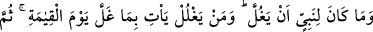
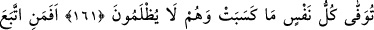
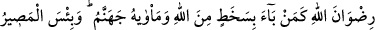
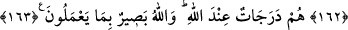
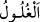

EMÂNETE HIYÂNET ETMEMEK
161. Bir peygambere, emânete hıyânet yaraşmaz. Kim emânete (devlet malına)
hıyânet ederse, kıyâmet günü, hâinlik ettiği şeyin günahı boynuna asılı olarak gelir.
Sonra herkese -asla haksızlığa uğratılmaksızın- kazandığı tastamam verilir.
162. Allah’ın hoşnutluğunu gözetenle Allah’ın hışmına uğrayan bir olur mu hiç?
Berikisinin yeri cehennemdir. Cehennem ise ne kötü bir varış noktasıdır.
163. Onlar Allah katında derece derecedirler. Allah onların yaptıklarını
görmektedir.
Peygamberlerden herhangi bir peygamberin ganimet malına hıyânet etmesi yakışmaz.
Doğru ve câiz değildir. “Hıyânet etmek” diye ifade ettiğimiz; (
) kelimesi gizlice
ve hâinâne bir şekilde ganimet malından bir miktar almak demektir. Bu aşırma, dünyada
utanmaya; âhirette de azaba sebep olacağı için insan mertebelerinin en yücesi olan
peygamberlik mansıbına ters bir davranıştır.
Bu âyetin maksadı Uhud günü, Hz. Peygamber’in Bedir günü ganimetleri taksim
etmediği gibi; “herkes eline geçirdiğine sahip olacaktır” demesinden korktuk” deyip
mevzilerini terkederek ganimet toplamaya koşan okçuların Peygamber (s.a.) hakkındaki
zanlarından Hz. Peygamber (s.a.)’in zimmetini tenzîh etmektir. Hz. Peygamber bunlara:
“Emrim gelinceye kadar bu geçidi terketmemenizi emretmemiş miydim?” demiş, onlar
da: “Kardeşlerimizi orada siperde bıraktık.” demişlerdir. Fakat Hz. Peygamber “Hayır
siz bizim ganimeti kendimize alıp, bölüştürmeyeceğimizi sandınız.” buyurmuştu.[135]
Ya da âyetteki maksat; Hz. Peygamber’i bu hususta çok şiddetli bir şekilde îkaz
etmektir. Zira rivâyete göre, Hz. Peygamber bir öncü bölüğü göndermiş, bu bölük
gelmeden de ganimetleri alıp oradakiler arasında taksim etmiş, öncülere hiçbir şey
bırakmamış. Bu âyet-i kerîme, bunun üzerine nâzil olmuştur.
Buna göre âyetin mânası şu şekilde de olur: Hiçbir peygambere ordusunun bir
bölümüne ganimetten pay verirken bir bölümüne vermemek yakışmaz. Ganimeti bütün
askerler arasında eşit olarak taksim etmesi gerekir. Bazı gazileri, ganimetten mahrûm
bırakmanın, hıyânet yani ganimeti gizlice almak olarak adlandırılması, bu işin
çirkinliğini, çok galiz bir şekilde ortaya koymak içindir.